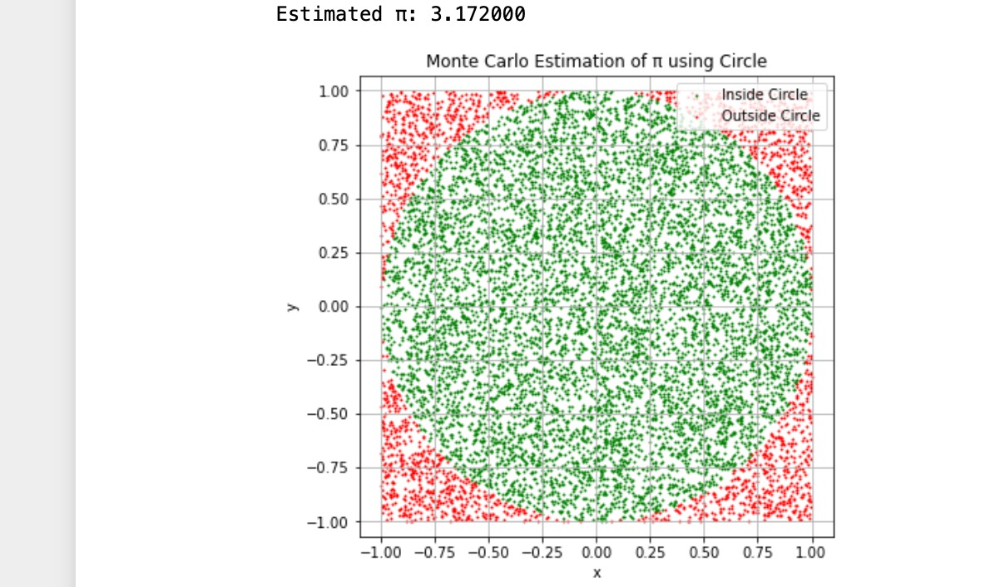
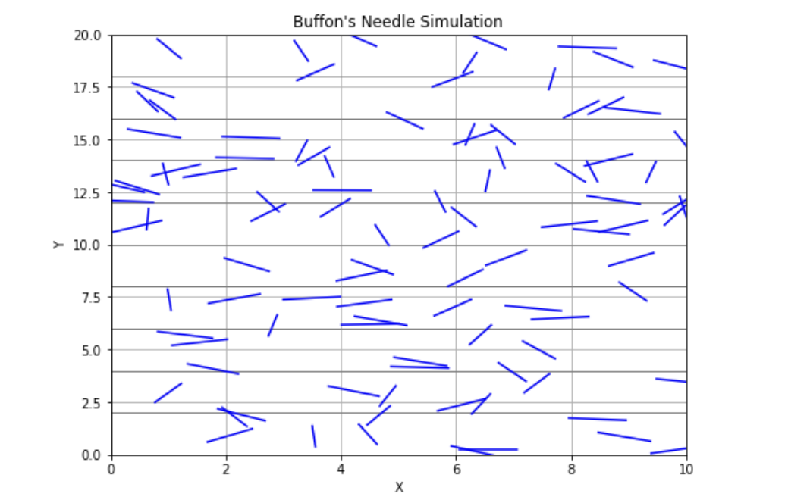

Problem 2
Estimating Pi using Monte Carlo Methods
Introduction
Monte Carlo methods use random sampling to obtain numerical results. In this problem, we explore two classical Monte Carlo approaches to estimate the value of \( \pi \):
• Circle-based method using geometric probability. • Buffon’s Needle problem using probabilistic geometry.
These simulations highlight the power of randomness in estimating mathematical constants and provide insight into convergence and computational efficiency.
Part 1: Estimating \( \pi \) Using a Circle
1. Theoretical Foundation
Consider a unit circle (radius = 1) inscribed within a square of side length 2 (from -1 to 1). The area of the circle is:
The area of the square is:
If we generate random points \((x, y)\) within the square, the probability that a point falls inside the circle is:
So,
2. Simulation Script (Circle-Based)
import numpy as np
import matplotlib.pyplot as plt
def estimate_pi(num_points=10000):
x = np.random.uniform(-1, 1, num_points)
y = np.random.uniform(-1, 1, num_points)
inside_circle = x**2 + y**2 <= 1
pi_estimate = 4 * np.sum(inside_circle) / num_points
return pi_estimate, x, y, inside_circle
# Example with 10,000 points
pi_val, x, y, inside = estimate_pi(10000)
print(f"Estimated π: {pi_val:.6f}")
plt.figure(figsize=(6, 6))
plt.scatter(x[inside], y[inside], color='green', s=1, label='Inside Circle')
plt.scatter(x[~inside], y[~inside], color='red', s=1, label='Outside Circle')
plt.title('Monte Carlo Estimation of π using Circle')
plt.xlabel('x')
plt.ylabel('y')
plt.legend()
plt.axis('equal')
plt.grid(True)
plt.show()
Output of Python script

Part 2: Estimating \(\pi\) Using Buffon’s Needle
1. Theoretical Foundation
Buffon’s Needle problem estimates \(\pi\) by dropping a needle of length \(L\) on a plane with parallel lines spaced a distance \(D\) apart. If \(L \leq D\), the probability that the needle crosses a line is:
\(P = \frac{2L}{\pi D}\)
Solving for \(\pi\):
\(\pi \approx \frac{2L \times \text{Number of Throws}}{D \times \text{Number of Crossings}}\)
2. Simulation Code (Buffon’s Needle)
import numpy as np
def buffon_needle(num_drops=10000, needle_length=1.0, line_distance=2.0):
if needle_length > line_distance:
raise ValueError("Needle length must be less than or equal to the distance between lines.")
crossings = 0
for _ in range(num_drops):
center = np.random.uniform(0, line_distance / 2)
angle = np.random.uniform(0, np.pi / 2)
if center <= (needle_length / 2) * np.sin(angle):
crossings += 1
if crossings == 0:
return None # Avoid division by zero
pi_estimate = (2 * needle_length * num_drops) / (line_distance * crossings)
return pi_estimate
# Example usage:
estimated_pi = buffon_needle(10000)
print(f"Estimated π using Buffon's Needle: {estimated_pi:.6f}")
## Estimated π using Buffon's Needle: 3.159558
3. Visualization
import matplotlib.patches as patches
def plot_buffon(needle_length=1.0, line_distance=2.0, num_needles=100):
fig, ax = plt.subplots(figsize=(8, 5))
# Draw lines
for i in range(0, 10):
ax.axhline(i * line_distance, color='gray', linewidth=1)
# Draw needles
for _ in range(num_needles):
y_center = np.random.uniform(0, 10 * line_distance)
angle = np.random.uniform(0, np.pi)
y1 = y_center + (needle_length / 2) * np.sin(angle)
y2 = y_center - (needle_length / 2) * np.sin(angle)
x1 = 5 + (needle_length / 2) * np.cos(angle)
x2 = 5 - (needle_length / 2) * np.cos(angle)
ax.plot([x1, x2], [y1, y2], 'b')
ax.set_xlim(4, 6)
ax.set_ylim(0, 10 * line_distance)
ax.set_title("Buffon's Needle Simulation")
plt.show()
Output of Python script

4. Analysis and Comparison
| Method | Estimated π (10,000 samples) | Convergence Speed | Computational Cost |
|---|---|---|---|
| Circle-based | ~3.14 | Fast | Low |
| Buffon’s Needle | Varies, slower convergence | Slow | Moderate |
The circle-based method converges faster and is computationally efficient. Buffon’s Needle method, while elegant and historical, generally requires many more samples to achieve the same level of accuracy.
Conclusion
Both methods successfully estimate \(\pi\) using random sampling.
Monte Carlo simulations demonstrate how randomness can provide approximations of complex constants.
The circle-based method is preferable in practice due to its simplicity and efficiency.
Buffon’s Needle is a powerful illustration of the intersection between geometry and probability.